Paddle Game

In this exercise you build a little game where you try to prevent a ball from falling down with a paddle you can move from left to right.
| Figuren | |
| Skripte | |
| Variablen | |
Creating Stage and Sprites
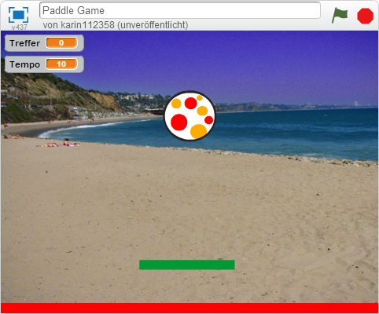{: .right} You begin by defining what your stage should look like. For this Game we need the beach backdrop, a ball, a paddle a sprite that defines the out area.
Select the backdrop from the library with the button on the bottom left. 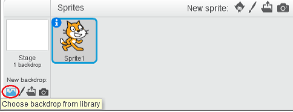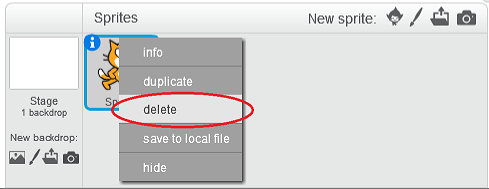{: .right} The next step is to delete the Scratchy sprite with the name Sprite1, by right-clicking on it and selecting delete.
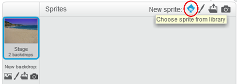{: .right} Now we need to add the ball sprite. To do so, click on Choose sprite form Library and add choose a ball sprite to use.
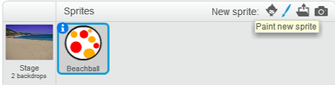{: .right} The paddle sprite has to be panted manually. For this we use the paint new sprite button.
At the drawing area we have to paint a simple rectangle. Therefore we need the rectangle and the fill with color tool from the toolbox.
When your have finished drawing the paddle you can move it by clicking and dragging the sprite in the top left scene design area. Drag the paddle to the bottom part of your scene but not at the very bottom, because we need some extra space for the out area down there. 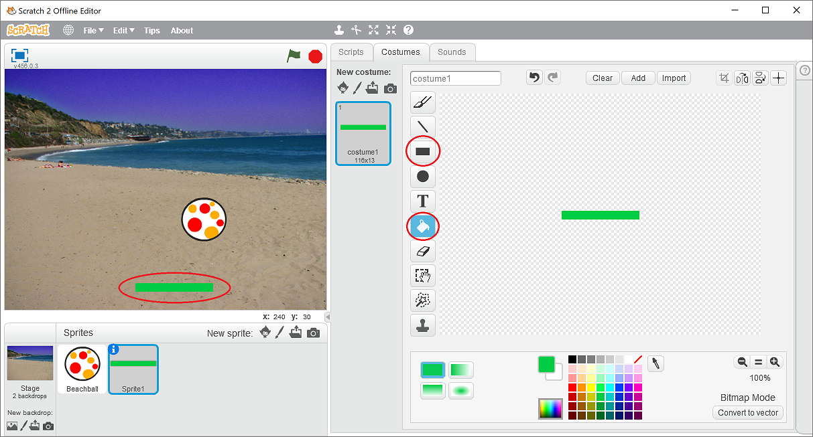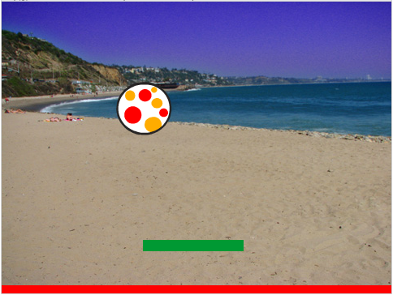{: .right} Finally we have to paint another sprite using the same tools to create the out area. Only this time, paint the rectangle in another color and use the whole drawing area. When done move the sprite to the very bottom of your scene.
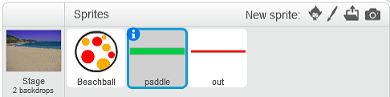{: .right} To make it easier for you to use the sprites later on, just give them custom names like paddle and out instead of Sprite 1 and Sprite 2, by clicking on the blue i on the top left corner of the selected sprite..
Move the Paddle From Left to Right.
- 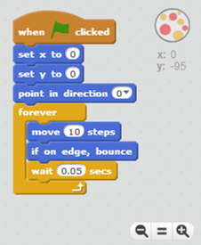{: .right}
In order to be able to keep the ball in the air, you must be able to move the paddle to the left and right.
To do so use the when … key pressed event. You can choose the left arrow and the right arrow.
In case of left arrow, set the direction to -90 degrees, which means that the paddle will move to the left. Then move the paddle 15 steps.
For right arrow set the direction to 90 degrees, which means that the paddle will move to the right.
To prevent the paddle from moving out of the screen, check if the current x-position of the paddle is in a valid range.
When you press either the left or right arrow now, the paddle will move.
At the start of the game the paddle should be placed in the center of the screen. To do so use the when flag clicked action and set the current x-position of the paddle to 0.
Let the Ball Bounce
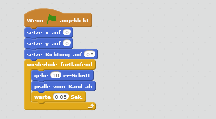{: .right} Now it’s time to move the ball. When the game is started the ball should be placed in the middle of the screen. To do so set the current x- and y-position to 0. Moreover set the direction to zero, which means that the ball will move upwards.
Now the movement can start. Repeat the following three actions: move 10 steps, if on edge, bounce and wait 0.05 secs. By changing this value you can control the balls speed.
If you run this script now, the ball will bounce between top and bottom edge, but the paddle will be ignored.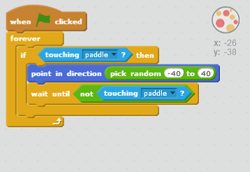{: .right} To change the direction of the ball, as soon as he touches the paddle, we need some more actions when the game starts. Here we have to check infinitely whether the ball touches the paddle or not. If it does, the direction is set to a random value between -40 and 40.
Direction 0 degrees means straight upwards. A value between -40 and 40 means that the ball will move upwards but spreads slightly to the left or right.
Then wait until the ball no longer touches the paddle before continuing the script.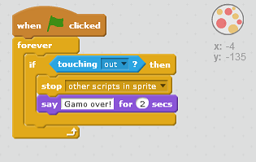{: .right} Last but not least you have to detect the ball touching the out area. In that case the game is over. 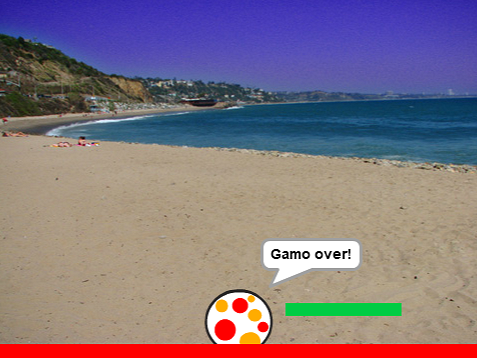
Some Ideas
- Instead of letting the ball move constant 10 steps a time you could increase the step count over time to make the game more difficult.
- Count the amount of paddle hits and let the player know at the end of the game how many times the ball touched the paddle.
- Control the paddle by mouse instead of the keyboard.
- Add another ball to the game after some time.
Try It
You can download and try an already completed version of this game here.